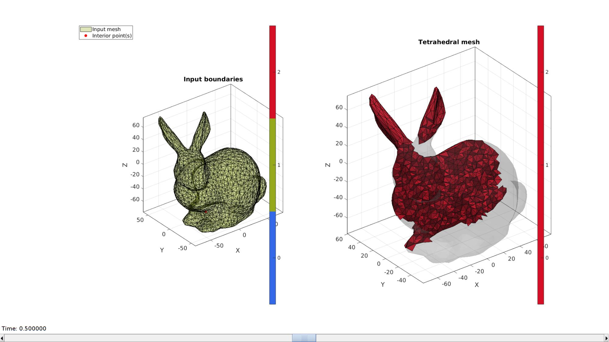
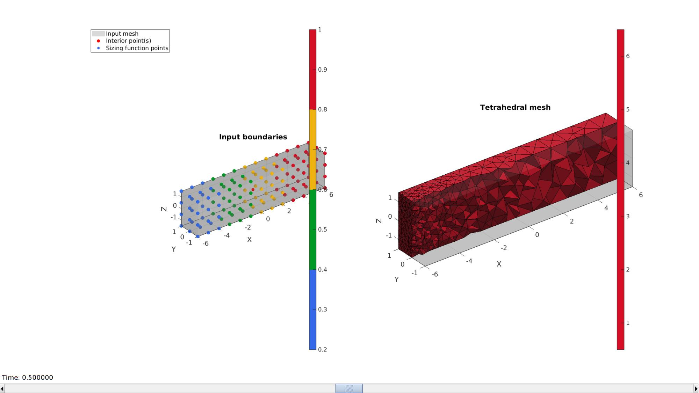
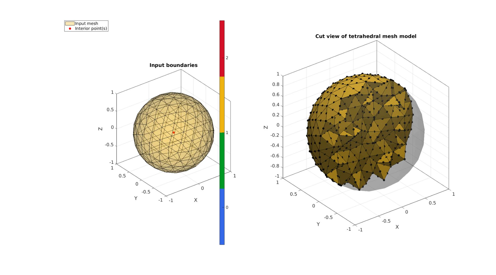

runTetGen
Below is a demonstration of the features of the runTetGen function
Contents
- MESHING A SINGLE REGION MODEL
- Visualizing mesh using meshView, see also anim8
- MESHING IMPORTED GEOMETRY
- MESHING A MULTI-REGION MODEL EG LAYERED
- MESHING A MULTI-REGION MODEL EG INCLUSION
- MESHING A MULTI-REGION MODEL CONTAINING HOLES
- Meshing from a quadrilateral input surface
- Specifying a sizing function to control local mesh density
- Meshing 10-node (i.e. quadratic) tetrahedral elements
clear; close all; clc;
Plot settings
fontSize=15; faceAlpha1=0.3; faceAlpha2=1; cMap=gjet(4); patchColor=cMap(1,:); markerSize=10;
path names
filePath=mfilename('fullpath'); savePath=fullfile(fileparts(fileparts(filePath)),'data','temp'); modelName=fullfile(savePath,'tetgenmodel');
MESHING A SINGLE REGION MODEL
testCase=2; switch testCase case 1 [F,V,~]=geoSphere(2,1); % Building a geodesic dome surface model case 2 [F,V]=stanford_bunny('g'); %Bunny V_mean=mean(V,1); V=V-V_mean(ones(size(V,1),1),:); end
Plotting model
cFigure; hold on; title('Surface model','FontSize',fontSize); gpatch(F,V,patchColor,'k',faceAlpha1); % patchNormPlot(F,V); camlight headlight; axisGeom(gca,fontSize); drawnow;
DEFINE FACE BOUNDARY MARKERS
faceBoundaryMarker=ones(size(F,1),1);
Define region points
[V_regions]=getInnerPoint(F,V);
Define hole points
V_holes=[];
Regional mesh volume parameter
[regionA]=tetVolMeanEst(F,V); %Volume for regular tets
CREATING THE INPUT STRUCTURE
stringOpt='-pq1.2AaY'; inputStruct.stringOpt=stringOpt; inputStruct.Faces=fliplr(F); inputStruct.Nodes=V; inputStruct.holePoints=V_holes; inputStruct.faceBoundaryMarker=faceBoundaryMarker; %Face boundary markers inputStruct.regionPoints=V_regions; %region points inputStruct.regionA=regionA; inputStruct.minRegionMarker=2; %Minimum region marker inputStruct.modelName=modelName;
Mesh model using tetrahedral elements using tetGen
[meshOutput]=runTetGen(inputStruct); %Run tetGen
%%%%%%%%%%%%%%%%%%%%%%%%%%%%%%%%%%%%%%%%%%%%% --- TETGEN Tetrahedral meshing --- 20-Jun-2019 15:05:23 %%%%%%%%%%%%%%%%%%%%%%%%%%%%%%%%%%%%%%%%%%%%% --- Writing SMESH file --- 20-Jun-2019 15:05:23 ----> Adding node field ----> Adding facet field ----> Adding holes specification ----> Adding region specification --- Done --- 20-Jun-2019 15:05:23 --- Running TetGen to mesh input boundary--- 20-Jun-2019 15:05:23 Opening /mnt/data/MATLAB/GIBBON/data/temp/tetgenmodel.smesh. Delaunizing vertices... Delaunay seconds: 0.00862 Creating surface mesh ... Surface mesh seconds: 0.002517 Recovering boundaries... Boundary recovery seconds: 0.003337 Removing exterior tetrahedra ... Spreading region attributes. Exterior tets removal seconds: 0.001914 Recovering Delaunayness... Delaunay recovery seconds: 0.002085 Refining mesh... Refinement seconds: 0.074504 Optimizing mesh... Optimization seconds: 0.005772 Writing /mnt/data/MATLAB/GIBBON/data/temp/tetgenmodel.1.node. Writing /mnt/data/MATLAB/GIBBON/data/temp/tetgenmodel.1.ele. Writing /mnt/data/MATLAB/GIBBON/data/temp/tetgenmodel.1.face. Writing /mnt/data/MATLAB/GIBBON/data/temp/tetgenmodel.1.edge. Output seconds: 0.067306 Total running seconds: 0.166204 Statistics: Input points: 1520 Input facets: 3036 Input segments: 4554 Input holes: 0 Input regions: 1 Mesh points: 5861 Mesh tetrahedra: 32563 Mesh faces: 66644 Mesh faces on exterior boundary: 3036 Mesh faces on input facets: 3036 Mesh edges on input segments: 4554 Steiner points inside domain: 4341 --- Done --- 20-Jun-2019 15:05:23 %%%%%%%%%%%%%%%%%%%%%%%%%%%%%%%%%%%%%%%%%%%%% --- Importing TetGen files --- 20-Jun-2019 15:05:23 --- Done --- 20-Jun-2019 15:05:23
Access model element and patch data
Fb=meshOutput.facesBoundary; Cb=meshOutput.boundaryMarker; V=meshOutput.nodes; CE=meshOutput.elementMaterialID; E=meshOutput.elements;
Visualizing mesh using meshView, see also anim8
meshView(meshOutput);

MESHING IMPORTED GEOMETRY
Import an STL model
defaultFolder = fileparts(fileparts(mfilename('fullpath'))); pathName=fullfile(defaultFolder,'data','STL'); fileName=fullfile(pathName,'femur.stl'); [stlStruct] = import_STL(fileName); F=stlStruct.solidFaces{1}; V=stlStruct.solidVertices{1}; % Merging nodes (nodes are not merged in stl) [F,V]=mergeVertices(F,V);
Plotting model
cFigure; hold on; title('Surface model','FontSize',fontSize); gpatch(F,V,patchColor,'k',faceAlpha1); camlight headlight; axisGeom(gca,fontSize); drawnow;

DEFINE FACE BOUNDARY MARKERS
faceBoundaryMarker=ones(size(F,1),1);
Define region points
V_regions=[0 0 0];
Define hole points
V_holes=[];
Regional mesh volume parameter
[regionA]=tetVolMeanEst(F,V); %Volume for regular tets
CREATING THE INPUT STRUCTURE
stringOpt='-pq1.2AaY'; inputStruct.stringOpt=stringOpt; inputStruct.Faces=F; inputStruct.Nodes=V; inputStruct.holePoints=V_holes; inputStruct.faceBoundaryMarker=faceBoundaryMarker; %Face boundary markers inputStruct.regionPoints=V_regions; %region points inputStruct.regionA=regionA; inputStruct.minRegionMarker=2; %Minimum region marker inputStruct.modelName=modelName;
Mesh model using tetrahedral elements using tetGen
[meshOutput]=runTetGen(inputStruct); %Run tetGen
%%%%%%%%%%%%%%%%%%%%%%%%%%%%%%%%%%%%%%%%%%%%% --- TETGEN Tetrahedral meshing --- 20-Jun-2019 15:05:27 %%%%%%%%%%%%%%%%%%%%%%%%%%%%%%%%%%%%%%%%%%%%% --- Writing SMESH file --- 20-Jun-2019 15:05:27 ----> Adding node field ----> Adding facet field ----> Adding holes specification ----> Adding region specification --- Done --- 20-Jun-2019 15:05:27 --- Running TetGen to mesh input boundary--- 20-Jun-2019 15:05:27 Opening /mnt/data/MATLAB/GIBBON/data/temp/tetgenmodel.smesh. Delaunizing vertices... Delaunay seconds: 0.017177 Creating surface mesh ... Surface mesh seconds: 0.005114 Recovering boundaries... Boundary recovery seconds: 0.008591 Removing exterior tetrahedra ... Spreading region attributes. Exterior tets removal seconds: 0.004341 Recovering Delaunayness... Delaunay recovery seconds: 0.004786 Refining mesh... Refinement seconds: 0.142656 Optimizing mesh... Optimization seconds: 0.01052 Writing /mnt/data/MATLAB/GIBBON/data/temp/tetgenmodel.1.node. Writing /mnt/data/MATLAB/GIBBON/data/temp/tetgenmodel.1.ele. Writing /mnt/data/MATLAB/GIBBON/data/temp/tetgenmodel.1.face. Writing /mnt/data/MATLAB/GIBBON/data/temp/tetgenmodel.1.edge. Output seconds: 0.091173 Total running seconds: 0.284563 Statistics: Input points: 2964 Input facets: 5924 Input segments: 8886 Input holes: 0 Input regions: 1 Mesh points: 9301 Mesh tetrahedra: 49855 Mesh faces: 102672 Mesh faces on exterior boundary: 5924 Mesh faces on input facets: 5924 Mesh edges on input segments: 8886 Steiner points inside domain: 6337 --- Done --- 20-Jun-2019 15:05:28 %%%%%%%%%%%%%%%%%%%%%%%%%%%%%%%%%%%%%%%%%%%%% --- Importing TetGen files --- 20-Jun-2019 15:05:28 --- Done --- 20-Jun-2019 15:05:28
Access model element and patch data
Fb=meshOutput.facesBoundary; Cb=meshOutput.boundaryMarker; V=meshOutput.nodes; CE=meshOutput.elementMaterialID; E=meshOutput.elements;
Visualizing mesh using meshView, see also anim8
meshView(meshOutput,[]);

MESHING A MULTI-REGION MODEL EG LAYERED
An example surface
r=2; %Sphere radius rc=3; %Central radius nr=15; nc=25; ptype='tri'; [F,V]=patchTorus(r,nr,rc,nc,ptype);
Creating layer by offsetting inwards
layerThickness=0.5; [N,Vn,Nv]=patchNormal(F,V); %Patch Normals V2=V-layerThickness.*Nv; [F,V,C]=joinElementSets({F F},{V V2}); %Join sets voxelSize=layerThickness/2; [M,G,bwLabels]=patch2Im(F,V,C,voxelSize); L=M==0; [indInternal]=getInnerVoxel(L,1,0); [I_in,J_in,K_in]=ind2sub(size(L),indInternal); %Convert to subscript coordinates [V_in1(:,1),V_in1(:,2),V_in1(:,3)]=im2cart(I_in,J_in,K_in,voxelSize*ones(1,3)); V_in1=V_in1+G.origin(ones(size(V_in1,1),1),:); V_in2=getInnerPoint(F(C==2,:),V);
cFigure; hold on; title('Surface model','FontSize',fontSize); gpatch(F,V,C,'none',0.2); colormap(cMap); camlight headlight; axisGeom(gca,fontSize); plotV(V_in1,'k.','MarkerSize',25); plotV(V_in2,'r.','MarkerSize',25);

DEFINE FACE BOUNDARY MARKERS
faceBoundaryMarker=C;
Define region points
V_regions=[V_in1;V_in2];
Define hole points
V_holes=[];
Regional mesh parameters
[A]=tetVolMeanEst(F,V); regionA=[A/2 A];
CREATING THE INPUT STRUCTURE
stringOpt='-pq1.2AaYQ'; inputStruct.stringOpt=stringOpt; inputStruct.Faces=F; inputStruct.Nodes=V; inputStruct.holePoints=V_holes; inputStruct.faceBoundaryMarker=faceBoundaryMarker; %Face boundary markers inputStruct.regionPoints=V_regions; %region points inputStruct.regionA=regionA; inputStruct.minRegionMarker=2; %Minimum region marker inputStruct.modelName=modelName;
Mesh model using tetrahedral elements using tetGen
[meshOutput]=runTetGen(inputStruct); %Run tetGen
%%%%%%%%%%%%%%%%%%%%%%%%%%%%%%%%%%%%%%%%%%%%% --- TETGEN Tetrahedral meshing --- 20-Jun-2019 15:05:32 %%%%%%%%%%%%%%%%%%%%%%%%%%%%%%%%%%%%%%%%%%%%% --- Writing SMESH file --- 20-Jun-2019 15:05:32 ----> Adding node field ----> Adding facet field ----> Adding holes specification ----> Adding region specification --- Done --- 20-Jun-2019 15:05:32 --- Running TetGen to mesh input boundary--- 20-Jun-2019 15:05:32 Opening /mnt/data/MATLAB/GIBBON/data/temp/tetgenmodel.smesh. --- Done --- 20-Jun-2019 15:05:32 %%%%%%%%%%%%%%%%%%%%%%%%%%%%%%%%%%%%%%%%%%%%% --- Importing TetGen files --- 20-Jun-2019 15:05:32 --- Done --- 20-Jun-2019 15:05:32
Access model element and patch data
Fb=meshOutput.facesBoundary; Cb=meshOutput.boundaryMarker; V=meshOutput.nodes; CE=meshOutput.elementMaterialID; E=meshOutput.elements;
Visualizing mesh using meshView, see also anim8
meshView(meshOutput,[]);

MESHING A MULTI-REGION MODEL EG INCLUSION
Creating boundary surfaces
%Outer bunny [F1,V1]=stanford_bunny('g'); %Bunny V1_mean=mean(V1,1); V1=V1-V1_mean(ones(size(V1,1),1),:); %Inner bunny V2=V1/4; V2(:,3)=V2(:,3)-35; V2(:,2)=V2(:,2)-15; V2(:,1)=V2(:,1)+10; V3=V1/4; V3(:,3)=V3(:,3)-10; V3(:,2)=V3(:,2)+10; V3(:,1)=V3(:,1)+40; %Joining surface sets [F,V,C]=joinElementSets({F1,F1,F1},{V1,V2,V3}); % % Plotting model cFigure; hold on; title('Surface model','FontSize',fontSize); gpatch(F,V,C,'k',faceAlpha1); camlight headlight; axisGeom(gca,fontSize); colormap(cMap); icolorbar;
Find interior points
V_in1=getInnerPoint(F(C==1,:),V); %Check if inside others (getInnerVoxel for region is safer)
V_in2=getInnerPoint(F(C==2,:),V);
V_in3=getInnerPoint(F(C==3,:),V);
Visualize interior points
cFigure; hold on; title('Surface model with interior points','FontSize',fontSize); gpatch(F,V,C,'none',faceAlpha1); plotV(V_in1,'b.','MarkerSize',25); plotV(V_in2,'g.','MarkerSize',25); plotV(V_in3,'r.','MarkerSize',25); camlight headlight; axisGeom(gca,fontSize); colormap(cMap);

DEFINE FACE BOUNDARY MARKERS
faceBoundaryMarker=C;
Define region points
V_regions=[V_in1;V_in2; V_in3];
Define hole points
V_holes=[];
Regional mesh parameters
[A]=tetVolMeanEst(F,V); %Volume estimate based on current edge lengths regionA=[5*A A/2 A/2]; %Element volume settings
CREATING THE INPUT STRUCTURE
stringOpt='-pq1.2AaYQ'; inputStruct.stringOpt=stringOpt; inputStruct.Faces=F; inputStruct.Nodes=V; inputStruct.holePoints=V_holes; inputStruct.faceBoundaryMarker=faceBoundaryMarker; %Face boundary markers inputStruct.regionPoints=V_regions; %region points inputStruct.regionA=regionA; inputStruct.minRegionMarker=2; %Minimum region marker inputStruct.modelName=modelName;
Mesh model using tetrahedral elements using tetGen
[meshOutput]=runTetGen(inputStruct); %Run tetGen
%%%%%%%%%%%%%%%%%%%%%%%%%%%%%%%%%%%%%%%%%%%%% --- TETGEN Tetrahedral meshing --- 20-Jun-2019 15:05:39 %%%%%%%%%%%%%%%%%%%%%%%%%%%%%%%%%%%%%%%%%%%%% --- Writing SMESH file --- 20-Jun-2019 15:05:39 ----> Adding node field ----> Adding facet field ----> Adding holes specification ----> Adding region specification --- Done --- 20-Jun-2019 15:05:39 --- Running TetGen to mesh input boundary--- 20-Jun-2019 15:05:39 Opening /mnt/data/MATLAB/GIBBON/data/temp/tetgenmodel.smesh. --- Done --- 20-Jun-2019 15:05:40 %%%%%%%%%%%%%%%%%%%%%%%%%%%%%%%%%%%%%%%%%%%%% --- Importing TetGen files --- 20-Jun-2019 15:05:40 --- Done --- 20-Jun-2019 15:05:40
Access model element and patch data
Fb=meshOutput.facesBoundary; Cb=meshOutput.boundaryMarker; V=meshOutput.nodes; CE=meshOutput.elementMaterialID; E=meshOutput.elements;
Setting "material indices". These can be based on the TetGen material ID
materialIndex=zeros(size(CE)); materialIndex(CE==-2)=1; materialIndex(CE==-3)=2; materialIndex(CE==-4)=3;
Visualizing mesh
%Selecting half of the model to see interior Y=V(:,2); YE=mean(Y(E),2); logicCutView=YE>mean(Y); [Fs,Cs]=element2patch(E(logicCutView,:),materialIndex(logicCutView),'tet4'); cFigure; hold on; title('Cut view of tetrahedral mesh model','FontSize',fontSize); gpatch(Fb,V,0.5*ones(1,3),'none',faceAlpha1); gpatch(Fs,V,Cs,'k',faceAlpha2); plotV(V(unique(Fs(:)),:),'k.','MarkerSize',markerSize); camlight headlight; axisGeom(gca,fontSize); axis off; colormap(cMap); icolorbar([1 3]); drawnow;
Visualizing mesh using meshView, see also anim8
meshView(meshOutput,[]);

MESHING A MULTI-REGION MODEL CONTAINING HOLES
Simulating a multiregion mesh
%A dino [F1,V1]=parasaurolophus; %An internal region [F2,V2,~]=geoSphere(2,0.5); V2(:,1)=2*V2(:,1); %An internal hole [F3,V3,~]=geoSphere(3,0.35); %Centering internal structures V_centre=[0.75 0 0.25]; V2=V2+V_centre(ones(size(V2,1),1),:); V3=V3+V_centre(ones(size(V3,1),1),:); %Joining surface sets F=[F1;F2+size(V1,1);F3+size(V1,1)+size(V2,1)]; V=[V1;V2;V3]; C=[ones(size(F1,1),1);2*ones(size(F2,1),1);3*ones(size(F3,1),1)]; %Surface marker colors
Plotting model
cFigure; hold on; title('Surface model','FontSize',fontSize); gpatch(F,V,C,'none',faceAlpha1); camlight headlight; axisGeom(gca,fontSize); colormap(cMap); drawnow;

DEFINE FACE BOUNDARY MARKERS
faceBoundaryMarker=C;
Define region points
%Find an interior point in region 1 logicRegion=ismember(faceBoundaryMarker,[1 2]); [V_in_1]=getInnerPoint(F(logicRegion,:),V); plotV(V_in_1,'r.','MarkerSize',25); %Find an interior point in region 1 logicRegion=ismember(faceBoundaryMarker,[2 3]); [V_in_2]=getInnerPoint(F(logicRegion,:),V); plotV(V_in_2,'r.','MarkerSize',25); V_regions=[V_in_1; V_in_2]; plotV(V_centre,'b.','MarkerSize',25);

Define hole points
V_holes=[V_centre];
Regional mesh parameters
[A]=tetVolMeanEst(F,V); regionA=[A A/2];
CREATING THE INPUT STRUCTURE
stringOpt='-pq1.2AaQY'; inputStruct.stringOpt=stringOpt; inputStruct.Faces=F; inputStruct.Nodes=V; inputStruct.holePoints=V_holes; inputStruct.faceBoundaryMarker=faceBoundaryMarker; %Face boundary markers inputStruct.regionPoints=V_regions; %region points inputStruct.regionA=regionA; inputStruct.minRegionMarker=2; %Minimum region marker inputStruct.modelName=modelName;
Mesh model using tetrahedral elements using tetGen
[meshOutput]=runTetGen(inputStruct); %Run tetGen
%%%%%%%%%%%%%%%%%%%%%%%%%%%%%%%%%%%%%%%%%%%%% --- TETGEN Tetrahedral meshing --- 20-Jun-2019 15:05:48 %%%%%%%%%%%%%%%%%%%%%%%%%%%%%%%%%%%%%%%%%%%%% --- Writing SMESH file --- 20-Jun-2019 15:05:48 ----> Adding node field ----> Adding facet field ----> Adding holes specification ----> Adding region specification --- Done --- 20-Jun-2019 15:05:48 --- Running TetGen to mesh input boundary--- 20-Jun-2019 15:05:48 Opening /mnt/data/MATLAB/GIBBON/data/temp/tetgenmodel.smesh. --- Done --- 20-Jun-2019 15:05:49 %%%%%%%%%%%%%%%%%%%%%%%%%%%%%%%%%%%%%%%%%%%%% --- Importing TetGen files --- 20-Jun-2019 15:05:49 --- Done --- 20-Jun-2019 15:05:49
Access model element and patch data
Fb=meshOutput.facesBoundary; Cb=meshOutput.boundaryMarker; V=meshOutput.nodes; CE=meshOutput.elementMaterialID; E=meshOutput.elements;
Visualizing mesh
%Selecting half of the model to see interior Y=V(:,2); YE=mean(Y(E),2); logicCutView=YE>mean(Y); [Fs,Cs]=element2patch(E(logicCutView,:),CE(logicCutView),'tet4'); cFigure; hold on; title('Cut view of tetrahedral mesh model','FontSize',fontSize); gpatch(Fb,V,0.5*ones(1,3),'none',faceAlpha1); gpatch(Fs,V,Cs,'k',faceAlpha2); plotV(V(unique(Fs(:)),:),'k.','MarkerSize',markerSize); camlight headlight; axisGeom(gca,fontSize); axis off; colormap(cMap); drawnow;

Meshing from a quadrilateral input surface
Build a quadrilateral surface
boxDim=[32*4 32 18]; boxEl=round(boxDim./10); [Fq,Vq,faceBoundaryMarker_q]=quadBox(boxDim,boxEl);
CREATING THE INPUT STRUCTURE
[regionA]=tetVolMeanEst(Fq,Vq); %Volume for regular tets stringOpt='-pq1.2AaYQ'; inputStruct.stringOpt=stringOpt; inputStruct.Faces=Fq; inputStruct.Nodes=Vq; inputStruct.holePoints=[]; inputStruct.faceBoundaryMarker=faceBoundaryMarker_q; %Face boundary markers inputStruct.regionPoints=[0 0 0]; %region points inputStruct.regionA=regionA; inputStruct.minRegionMarker=2; %Minimum region marker inputStruct.modelName=modelName;
Mesh model using tetrahedral elements using tetGen
[meshOutput]=runTetGen(inputStruct); %Run tetGen
%%%%%%%%%%%%%%%%%%%%%%%%%%%%%%%%%%%%%%%%%%%%% --- TETGEN Tetrahedral meshing --- 20-Jun-2019 15:05:51 %%%%%%%%%%%%%%%%%%%%%%%%%%%%%%%%%%%%%%%%%%%%% --- Writing SMESH file --- 20-Jun-2019 15:05:51 ----> Adding node field ----> Adding facet field ----> Adding holes specification ----> Adding region specification --- Done --- 20-Jun-2019 15:05:51 --- Running TetGen to mesh input boundary--- 20-Jun-2019 15:05:51 Opening /mnt/data/MATLAB/GIBBON/data/temp/tetgenmodel.smesh. --- Done --- 20-Jun-2019 15:05:51 %%%%%%%%%%%%%%%%%%%%%%%%%%%%%%%%%%%%%%%%%%%%% --- Importing TetGen files --- 20-Jun-2019 15:05:51 --- Done --- 20-Jun-2019 15:05:51
Visualizing mesh
meshView(meshOutput);

Specifying a sizing function to control local mesh density
Build example geometry
boxDim=[32*4 32 18]; boxEl=round(boxDim./10); [F,V,faceBoundaryMarker]=quadBox(boxDim,boxEl);
Defining a size function on the boundary nodes
%Get edge lengths and base minimum size on input edge lengths [edgeLengths]=patchEdgeLengths(F,V); minEdgeSize=mean(edgeLengths)/5; %The smallest element size n=5; %The largest element edge length is n times minEdgeSize edgeSizeField=V(:,1); edgeSizeField=edgeSizeField-min(edgeSizeField(:)); edgeSizeField=edgeSizeField./max(edgeSizeField(:)); edgeSizeField=(edgeSizeField*(n-1))+1; %Range from 0-n depending on V(:,1) i.e. X-dir edgeSizeField=(edgeSizeField*minEdgeSize);
CREATING THE INPUT STRUCTURE
inputStruct.stringOpt='-pq1.1Aa'; inputStruct.Faces=F; inputStruct.Nodes=V; inputStruct.sizeData=edgeSizeField; %The size data inputStruct.holePoints=[]; inputStruct.faceBoundaryMarker=faceBoundaryMarker; %Face boundary markers inputStruct.regionPoints=[0 0 0]; %region points
Mesh model using tetrahedral elements using tetGen
[meshOutput]=runTetGen(inputStruct); %Run tetGen
%%%%%%%%%%%%%%%%%%%%%%%%%%%%%%%%%%%%%%%%%%%%% --- TETGEN Tetrahedral meshing --- 20-Jun-2019 15:05:54 %%%%%%%%%%%%%%%%%%%%%%%%%%%%%%%%%%%%%%%%%%%%% --- Writing SMESH file --- 20-Jun-2019 15:05:54 ----> Adding node field ----> Adding facet field ----> Adding holes specification ----> Adding region specification --- Done --- 20-Jun-2019 15:05:54 --- Writing MTR file --- 20-Jun-2019 15:05:54 --- Running TetGen to mesh initial Delaunay tesselation using sizing function--- 20-Jun-2019 15:05:54 Opening /mnt/data/MATLAB/GIBBON/data/temp/tetgenmodel.smesh. Opening /mnt/data/MATLAB/GIBBON/data/temp/tetgenmodel.mtr. Cannot access file /mnt/data/MATLAB/GIBBON/data/temp/tetgenmodel.b.node. Delaunizing vertices... Delaunay seconds: 0.003848 Creating surface mesh ... Surface mesh seconds: 0.000593 Constrained Delaunay... Constrained Delaunay seconds: 0.000945 Removing exterior tetrahedra ... Spreading region attributes. Exterior tets removal seconds: 7.9e-05 Refining mesh... Refinement seconds: 0.027469 Optimizing mesh... Optimization seconds: 0.001263 Writing /mnt/data/MATLAB/GIBBON/data/temp/tetgenmodel.1.node. Writing /mnt/data/MATLAB/GIBBON/data/temp/tetgenmodel.1.ele. Writing /mnt/data/MATLAB/GIBBON/data/temp/tetgenmodel.1.face. Writing /mnt/data/MATLAB/GIBBON/data/temp/tetgenmodel.1.edge. Writing /mnt/data/MATLAB/GIBBON/data/temp/tetgenmodel.1.mtr. Writing /mnt/data/MATLAB/GIBBON/data/temp/tetgenmodel.1.p2t. Output seconds: 0.016515 Total running seconds: 0.050791 Statistics: Input points: 144 Input facets: 142 Input segments: 72 Input holes: 0 Input regions: 1 Mesh points: 1732 Mesh tetrahedra: 7593 Mesh faces: 16159 Mesh faces on exterior boundary: 1946 Mesh faces on input facets: 1946 Mesh edges on input segments: 184 Steiner points on input facets: 719 Steiner points on input segments: 112 Steiner points inside domain: 757 --- Done --- 20-Jun-2019 15:05:54 %%%%%%%%%%%%%%%%%%%%%%%%%%%%%%%%%%%%%%%%%%%%% --- Importing TetGen files --- 20-Jun-2019 15:05:54 --- Done --- 20-Jun-2019 15:05:54
Visualize sizing function and result
hf=cFigure; subplot(1,2,1); hold on; title('The sizing field on input nodes','FontSize',fontSize); gpatch(F,V,'kw','none',0.25); scatterV(V,75,edgeSizeField,'fill') colormap(gjet(250)); colorbar; axisGeom(gca,fontSize); camlight headlight; hs=subplot(1,2,2); hold on; title('Cut view of the mesh','FontSize',fontSize); optionStruct.hFig=[hf hs]; meshView(meshOutput,optionStruct); axisGeom(gca,fontSize); drawnow;

Meshing 10-node (i.e. quadratic) tetrahedral elements
% Building spherical surface models r1=1; r2=2*(r1/3); r3=r1/3; [F_sphere,V_sphere,~]=geoSphere(2,r1); [F_core,V_core,~]=geoSphere(1,r2); [F_core2,V_core2,~]=geoSphere(1,r3); % Merging node sets V1=[V_sphere;V_core;V_core2]; F1=[F_sphere;F_core+size(V_sphere,1);F_core2+size(V_sphere,1)+size(V_core,1)]; % Face boundary markers faceBoundaryMarker=[ones(size(F_sphere,1),1); 2*ones(size(F_core,1),1); 3*ones(size(F_core2,1),1)];
Define region point
V_regions=[0 0 (r1+r2)/2;0 0 (r2+r3)/2;]; % Define hole points V_holes=[0 0 0]; % Regional mesh parameter (desired volume) [A]=tetVolMeanEst(F1,V1); regionA=A*ones(1,2); stringOpt='-pq1.2AaYQ'; inputStruct.stringOpt=stringOpt; inputStruct.Faces=F1; inputStruct.Nodes=V1; inputStruct.holePoints=V_holes; inputStruct.faceBoundaryMarker=faceBoundaryMarker; %Face boundary markers inputStruct.regionPoints=V_regions; %region points inputStruct.regionA=regionA; inputStruct.minRegionMarker=2; %Minimum region marker inputStruct.modelName=modelName;
Setting desired element type to tet10 (default is tet4)
inputStruct.tetType='tet10';
Mesh model using tetrahedral elements using tetGen
[meshOutput]=runTetGen(inputStruct); %Run tetGen
%%%%%%%%%%%%%%%%%%%%%%%%%%%%%%%%%%%%%%%%%%%%% --- TETGEN Tetrahedral meshing --- 20-Jun-2019 15:05:57 %%%%%%%%%%%%%%%%%%%%%%%%%%%%%%%%%%%%%%%%%%%%% --- Writing SMESH file --- 20-Jun-2019 15:05:57 ----> Adding node field ----> Adding facet field ----> Adding holes specification ----> Adding region specification --- Done --- 20-Jun-2019 15:05:57 --- Writing MTR file --- 20-Jun-2019 15:05:57 --- Running TetGen to mesh initial Delaunay tesselation using sizing function--- 20-Jun-2019 15:05:57 Opening /mnt/data/MATLAB/GIBBON/data/temp/tetgenmodel.smesh. Opening /mnt/data/MATLAB/GIBBON/data/temp/tetgenmodel.mtr. !! Point numbers are not equal. Ignored. Cannot access file /mnt/data/MATLAB/GIBBON/data/temp/tetgenmodel.b.node. --- Done --- 20-Jun-2019 15:05:57 %%%%%%%%%%%%%%%%%%%%%%%%%%%%%%%%%%%%%%%%%%%%% --- Importing TetGen files --- 20-Jun-2019 15:05:57 --- Done --- 20-Jun-2019 15:05:57
Access model element and patch data
Fb=meshOutput.facesBoundary; Cb=meshOutput.boundaryMarker; V=meshOutput.nodes; CE=meshOutput.elementMaterialID; E=meshOutput.elements;
Visualizing mesh
%Selecting half of the model to see interior Y=V(:,2); YE=mean(Y(E),2); logicCutView=YE>mean(Y); [Fs,Cs]=element2patch(E(logicCutView,:),CE(logicCutView),'tet10'); cFigure; hold on; title('Cut view of tetrahedral mesh model','FontSize',fontSize); gpatch(Fb,V,0.5*ones(1,3),'none',faceAlpha1); gpatch(Fs,V,Cs,'k',faceAlpha2); % patchNormPlot(Fs,V); plotV(V(unique(Fs(:)),:),'k.','MarkerSize',markerSize); camlight headlight; axisGeom(gca,fontSize); axis off; colormap(cMap); drawnow;


GIBBON www.gibboncode.org
Kevin Mattheus Moerman, gibbon.toolbox@gmail.com
GIBBON footer text
License: https://github.com/gibbonCode/GIBBON/blob/master/LICENSE
GIBBON: The Geometry and Image-based Bioengineering add-On. A toolbox for image segmentation, image-based modeling, meshing, and finite element analysis.
Copyright (C) 2019 Kevin Mattheus Moerman
This program is free software: you can redistribute it and/or modify it under the terms of the GNU General Public License as published by the Free Software Foundation, either version 3 of the License, or (at your option) any later version.
This program is distributed in the hope that it will be useful, but WITHOUT ANY WARRANTY; without even the implied warranty of MERCHANTABILITY or FITNESS FOR A PARTICULAR PURPOSE. See the GNU General Public License for more details.
You should have received a copy of the GNU General Public License along with this program. If not, see http://www.gnu.org/licenses/.